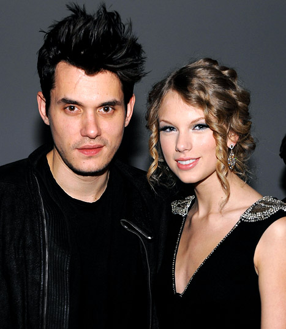
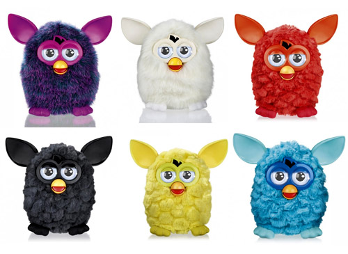
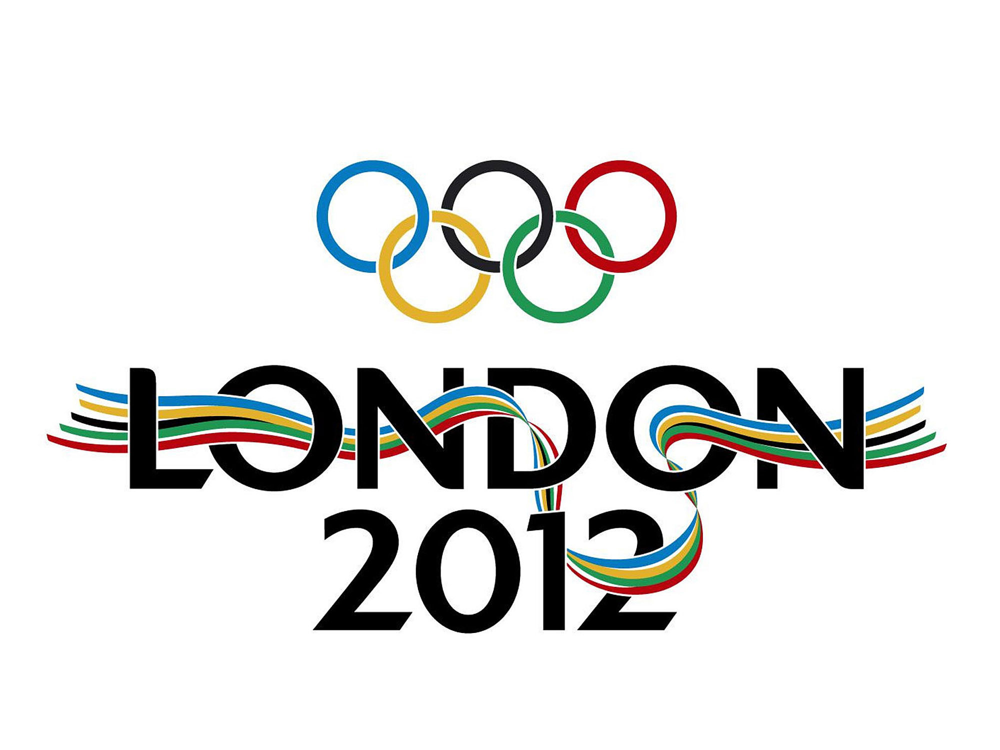
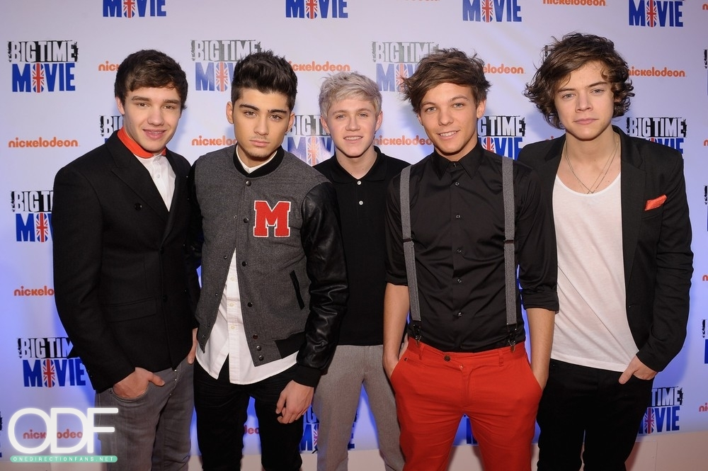
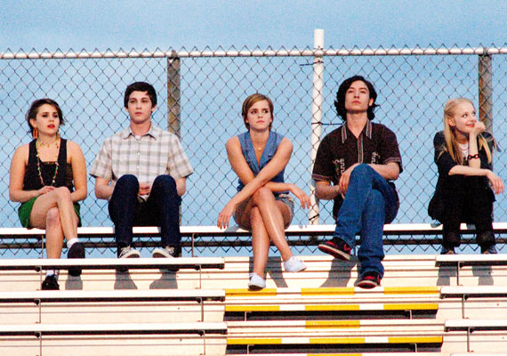

Significant Movies
Hunger Games
It is written in the voice of 16-year-old Katniss Everdeen, who lives in the post-apocalyptic nation of Panem, where the countries of North America once existed. The Capitol, a highly advanced metropolis, exercises political control over the rest of the nation. The Hunger Games are an annual event in which one boy and one girl aged 12–18 from each of the twelve districts surrounding the Capitol are selected by lottery to compete in a televised battle to the death.
(5) Pop Culture Icons, Things
Who is Taylor Swift dating now?

Furby's are Back?!
2012 London Olympics
One Direction
Selena Gomez and Justin Bieber Breakup



Significant Signature of Book
"And in that moment, I swear we were infinite." - The Perks of Being a Wallflower
“We accept the love we think we deserve.” - The Perks of Being a Wallflower
